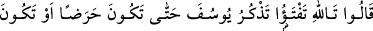

Peygamberlerden âmâ olanlar İshâk, Yâkub ve Şuayb (a.s.)’dır.
Eşraftan âmâ olanlar ise Abdulmüttalib b. Hâşim, Ümeyye b. Abdişems, Mut‘im b.
Adiy ve Zühre b. Kilâb’dır.
İster Hz. Peygamber (s.a.)’in devrinde olsun, isterse onun vefâtından sonra olsun âmâ
olan sahâbîler şunlardır:
Berâ b. Âzib,
Câbir b. Abdullah,
Hassan b. Sâbit,
Hakem b. Ebi’l-Âs,
Sa‘d b. Ebî Vakkas,
Saîd b. Yerbû,
Sahr b. Harb,
Ebû Süfyan,
Abbas b. Abdulmuttalib,
Abdullah b. Erkam,
Abdullah b. Ömer,
Abdullah b. Abbas,
Abdullah b. Umeyr,
Abdullah b. Ebî Evfa,
İtbân (veyâ Utbân) b. Mâlik,
Utbe b. Mes‘ûd el-Hüzelî,
Osman b. Âmir,
Ebû Kuhâfe,
Akîl b. Ebî Tâlib,
Müezzin Amr b. Ümmi Mektûm ve
Katâde b. Numan (r.anhüm ecmaîn).
“Artık yutkunuyor da yutkunuyordu.” Yani oğullarına karşı öfke doluydu, ama bunu
içinde tutuyordu.
Bu sînede ne dertler var ki söylemeye imkânım yok
85. (Oğulları:) “Allah’a andolsun ki sen hâlâ Yûsuf’u anıyorsun. Sonunda ya
hasta olacaksın ya da büsbütün helâk olacaksın!” dediler.
Oğulları: “Allah’a andolsun ki sen hâlâ” kendisi için ağlayıp sızlayarak “Yûsuf ’u
anıyorsun. Sonunda ya hasta olacaksın” ölümle yüz yüze gelen hastaya döneceksin